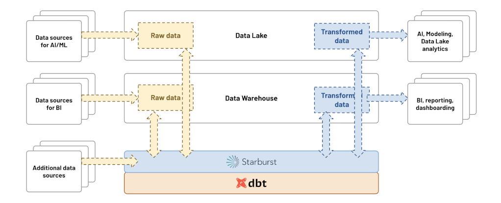

This is part one of the lakehouse ETL with dbt and Trino series. Start at the introduction if you haven’t already.
Trino introduction
Trino is a distributed SQL query engine designed to query large datasets distributed over one or more heterogeneous data sources.
Since Trino is being called a database by many members of the community, it makes sense to begin with a definition of what Trino is not.
Do not mistake the fact that Trino understands SQL with it providing the features of a standard database. Trino is not a general-purpose relational database. It is not a replacement for databases like MySQL, PostgreSQL or Oracle.
Trino is a tool designed to efficiently query vast amounts of data using distributed queries, and was designed to handle data warehousing, analytics, data analysis, and aggregating large amounts of data and producing reports. These workloads are often classified as Online Analytical Processing (OLAP).
Trino ETL/ELT capabilities
With fault-tolerant execution, Trino is now ready to handle production, business critical data pipelines, data transformation, and write operations using the unique feature of query federation.
In version 393, Trino added support for the
MERGE statement, which can be
used to effectively load data into target tables.
dbt-trino supports incremental
models and snapshot features based on the MERGE statement. Note that MERGE
is currently supported by a limited number of Trino connectors, such as Hive,
Iceberg, Delta Lake and others.
Starburst products
Starburst Galaxy and Starburst Enterprise fully support dbt-trino. To learn more about these products, check out the official Starburst documentation.

Initialization
This page presumes you have Docker installed and running, and that you have some familiarity with Docker commands. For Mac and Windows evaluations, make sure you have Docker Desktop installed and running.
You will go through all the steps of running Trino on your own computer and set up a set of docker containers using docker compose and the following:
- The Trino server.
- The webshop database on PostgreSQL.
- The clickstream data on MongoDB.
- The lakehouse powered by Iceberg table format.
Configuring Trino
Running Trino is fairly easy. Without docker compose you could simply run the
following command and have a Trino instance running locally:
docker run -d -p 8080:8080 --name trino --rm trinodb/trino:latest
However, you are going to add all the data sources and our data lake later on. So, you need something that can run more than one container, that’s where Docker Compose comes in.
Compose is a tool for defining and running multi-container Docker applications. With Compose, you use a YAML file to configure your application’s services. Then, with a single command, you create and start all the services from your configuration.
Create this docker-compose.yml file, add the Trino container, and create a
network so all our containers can talk to each other:
version: "3.9"
services:
trino:
hostname: trino
image: 'trinodb/trino:latest'
ports:
- '8080:8080'
networks:
trino-network:
driver: bridge
To run your docker setup, run docker compose up.
Once you see io.trino.server.Server ======== SERVER STARTED ========, your
server has successfully started up, and you are ready to query. You can use the
Trino CLI to run some queries:
-- check version of Trino
SELECT version();
--
Adding PostgreSQL webshop database
Adding the PostgreSQL database requires additional configuration. Trino needs to know how to connect to your database.
First, create a trino/catalog folder in your project, and add the Trino
configuration there. This folder is mounted onto /etc/trino/catalog in the
Trino container.
Specify :ro for read-only, as it shouldn’t be possible to change these
configurations once the container is started:
...
services:
trino:
hostname: trino
image: 'trinodb/trino:latest'
ports:
- '8080:8080'
volumes:
- ./trino/catalog:/etc/trino/catalog:ro
...
Now, add the catalog configuration to connect to the PostgreSQL database.
Create a webshop.properties file in the trino/catalog folder:
connector.name=postgresql
connection-url=jdbc:postgresql://jaffle_webshop:5432/postgres
connection-user=postgres
connection-password=postgres
You now need to add the actual Postgres database:
...
jaffle_webshop:
image: postgres:11
container_name: jaffle_webshop
volumes:
- ./jaffle_webshop/init-customers.sql:/docker-entrypoint-initdb.d/init-customers.sql
- ./jaffle_webshop/raw_customers.csv:/home/dump/raw_customers.csv
- ./jaffle_webshop/init-payments.sql:/docker-entrypoint-initdb.d/init-payments.sql
- ./jaffle_webshop/raw_payments.csv:/home/dump/raw_payments.csv
- ./jaffle_webshop/init-orders.sql:/docker-entrypoint-initdb.d/init-orders.sql
- ./jaffle_webshop/raw_orders.csv:/home/dump/raw_orders.csv
- ./jaffle_webshop/init-sessions.sql:/docker-entrypoint-initdb.d/init-sessions.sql
- ./jaffle_webshop/raw_sessions.csv:/home/dump/raw_sessions.csv
environment:
- POSTGRES_DB=postgres
- POSTGRES_USER=postgres
- POSTGRES_PASSWORD=postgres
ports:
- "15432:5432"
...
Adding the click-stream database (Mongodb)
MongoDB is a NoSQL document database where clickstream data from websites is loaded.
Create a website.properties file in the trino/catalog folder:
connector.name=mongodb
mongodb.connection-url=mongodb://mongodb:27017/
Adding the lakehouse powered by Iceberg and MinIO
The final step in setting up Trino with all underlying components and databases is to create and configure MinIO, which is an S3-compatible object storage.
Create a datalake.properties file in the trino/catalog folder:
connector.name=iceberg
hive.metastore.uri=thrift://hive-metastore:9083
hive.s3.endpoint=http://minio:9000
hive.s3.path-style-access=true
hive.s3.aws-access-key=minio
hive.s3.aws-secret-key=minio123
hive.metastore-cache-ttl=0s
hive.metastore-refresh-interval=5s
hive.metastore-timeout=10s
The Iceberg connector also requires a Hive metastore service (HMS), which is the
hive-metastore container and the required database configured with the
following docker-compose code snippet:
# HMS backend database
metastore_db:
image: postgres:11
hostname: metastore_db
container_name: metastore_db
environment:
POSTGRES_USER: hive
POSTGRES_PASSWORD: hive
POSTGRES_DB: metastore
# Hive metastore service (HMS)
hive-metastore:
container_name: hive-metastore
hostname: hive-metastore
image: 'starburstdata/hive:3.1.2-e.15'
ports:
- '9083:9083' # Metastore Thrift
environment:
HIVE_METASTORE_DRIVER: org.postgresql.Driver
HIVE_METASTORE_JDBC_URL: jdbc:postgresql://metastore_db:5432/metastore
HIVE_METASTORE_USER: hive
HIVE_METASTORE_PASSWORD: hive
HIVE_METASTORE_WAREHOUSE_DIR: s3://datalake/
S3_ENDPOINT: http://minio:9000
S3_ACCESS_KEY: minio
S3_SECRET_KEY: minio123
S3_PATH_STYLE_ACCESS: "true"
REGION: ""
GOOGLE_CLOUD_KEY_FILE_PATH: ""
AZURE_ADL_CLIENT_ID: ""
AZURE_ADL_CREDENTIAL: ""
AZURE_ADL_REFRESH_URL: ""
AZURE_ABFS_STORAGE_ACCOUNT: ""
AZURE_ABFS_ACCESS_KEY: ""
AZURE_WASB_STORAGE_ACCOUNT: ""
AZURE_ABFS_OAUTH: ""
AZURE_ABFS_OAUTH_TOKEN_PROVIDER: ""
AZURE_ABFS_OAUTH_CLIENT_ID: ""
AZURE_ABFS_OAUTH_SECRET: ""
AZURE_ABFS_OAUTH_ENDPOINT: ""
AZURE_WASB_ACCESS_KEY: ""
depends_on:
- metastore_db
# MinIO object storage
minio:
hostname: minio
image: 'minio/minio:RELEASE.2022-05-26T05-48-41Z'
container_name: minio
ports:
- '9000:9000'
- '9001:9001'
environment:
MINIO_ACCESS_KEY: minio
MINIO_SECRET_KEY: minio123
command: server /data --console-address ":9001"
# This job creates the "datalake" bucket on Minio
mc-job:
image: 'minio/mc:RELEASE.2022-05-09T04-08-26Z'
container_name: mc-job
entrypoint: |
/bin/bash -c "
sleep 5;
/usr/bin/mc config --quiet host add myminio http://minio:9000 minio minio123;
/usr/bin/mc mb --quiet myminio/datalake
"
depends_on:
- minio
Run docker compose up -d to spin up all containers from the docker compose
manifest. Now, all your infrastructure is up and running, and you are ready to
create your first models using dbt and Trino!